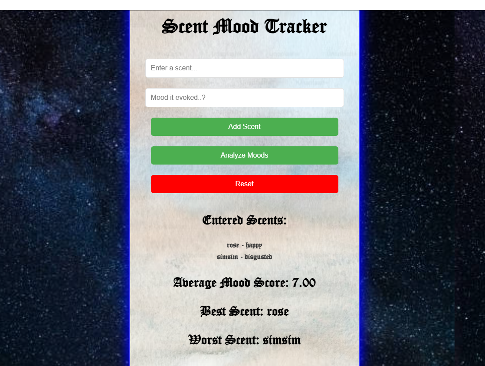
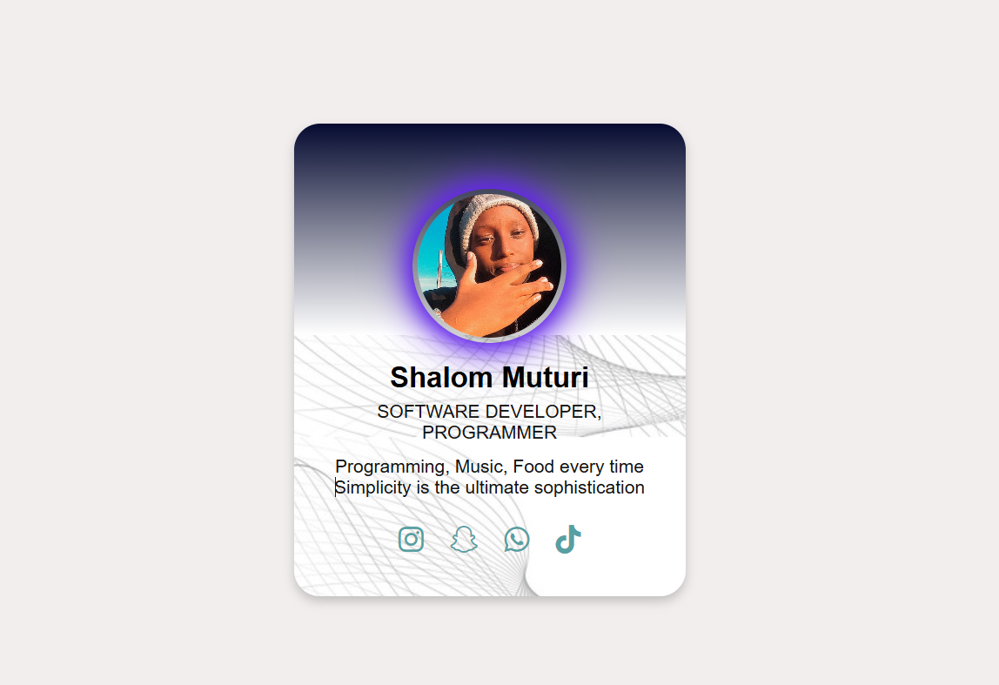
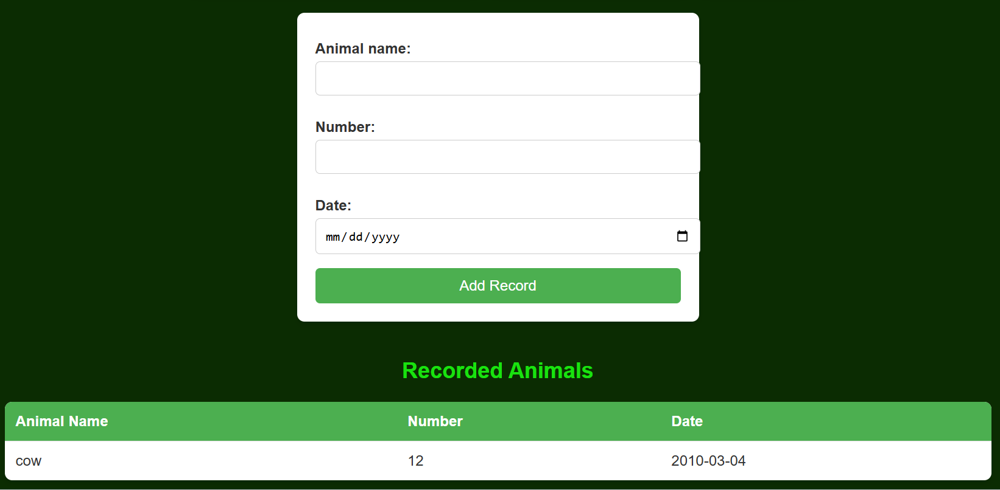

Below are images followed by small explanations of the different projects I have done and am currently working on.
Project 1: Scent-based Mood Tracker
This project analyzes the mood of the user according to scent. The user has to input a scent and the feeling/mood it evokes in them. The program then analyzes the moods and provides an average mood of the user, their best scent, and their worst scent.
Project 2: Personal Profile Card
This profile card contains my photo, the careers I aspire to pursue in the future, and buttons that, when clicked, direct users to my social media platforms.
Project 3: FarmLink
This is a group project I am currently working on. We are building a platform that allows farmers to keep their records in an organized and reliable way.